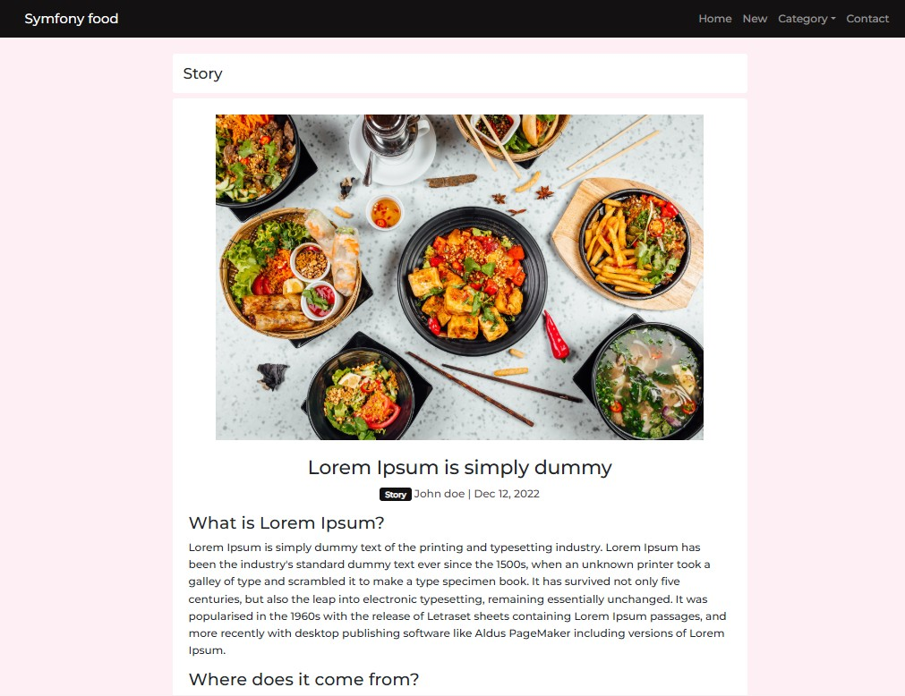

Symfoni Food Theme
Symfoni Food adalah template website kuliner dengan tampilan bersih, ringan, dan responsif. Cocok untuk restoran, kafe, produk makanan, layanan katering, atau landing page bisnis kuliner yang ingin tampil hangat dan profesional.

Visual Kuliner
Komposisi halaman dibuat untuk menonjolkan produk makanan, menu unggulan, dan karakter brand kuliner.
Landing Page Siap Pakai
Cocok untuk promosi restoran, kafe, katering, UMKM makanan, dan campaign produk kuliner.
Ringan dan Responsif
Layout tetap nyaman dibuka di desktop, tablet, dan mobile untuk pengalaman pengguna yang konsisten.
Preview Halaman
Tampilan utama dari template Symfoni Food.

Mulai Dengan Symfoni Food
Lihat demo langsung atau pelajari source code theme melalui repository.